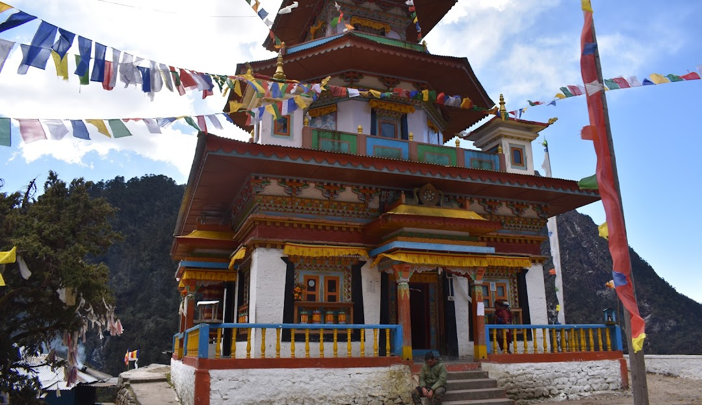
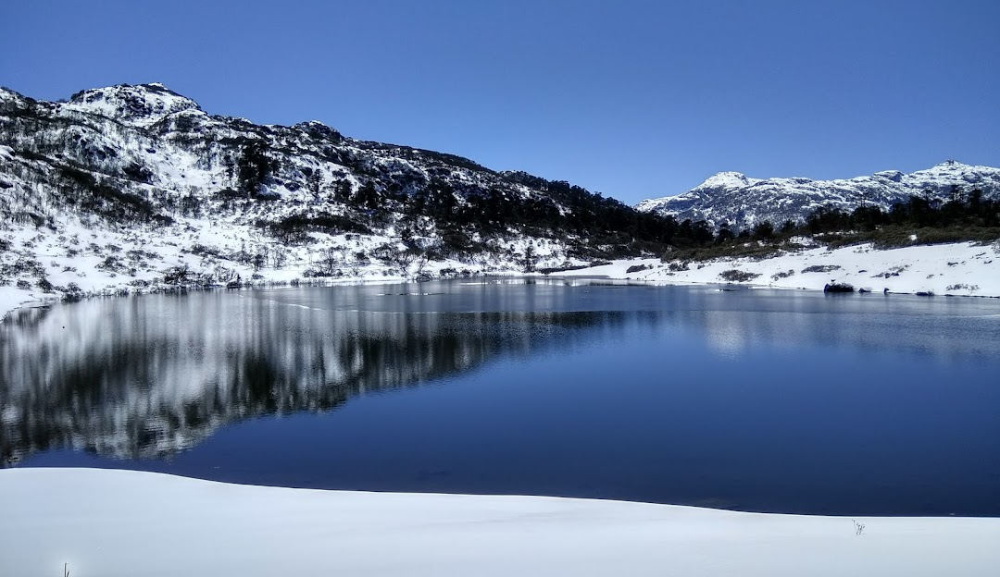
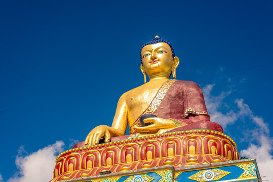
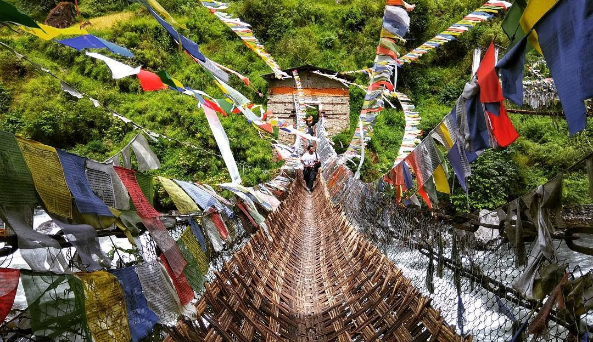
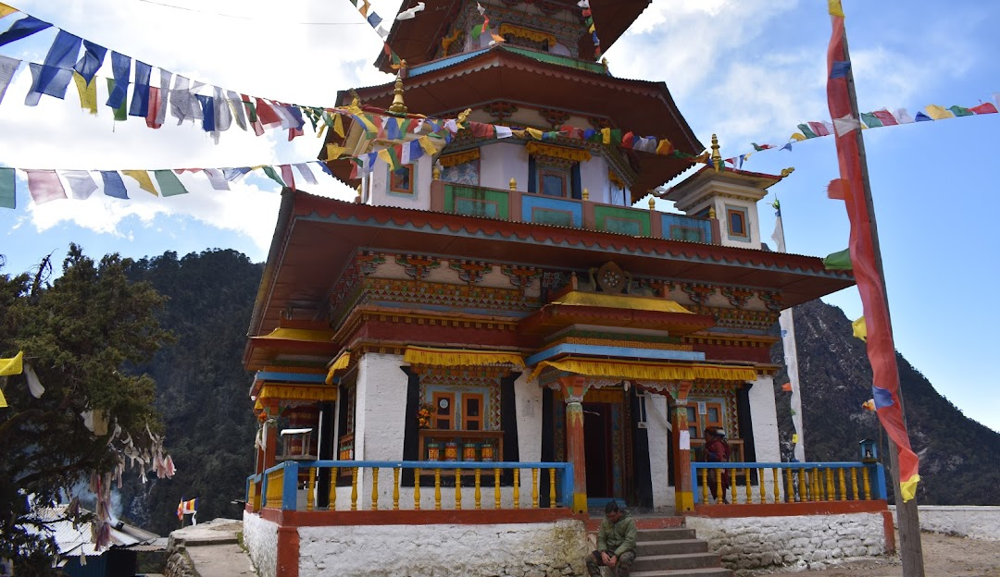
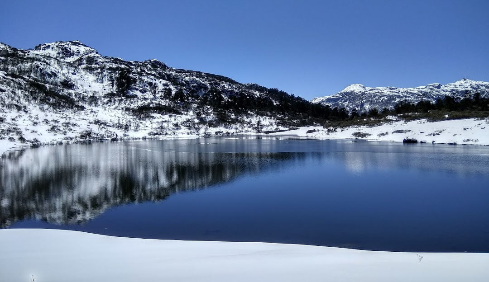
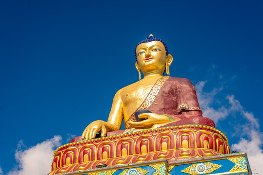
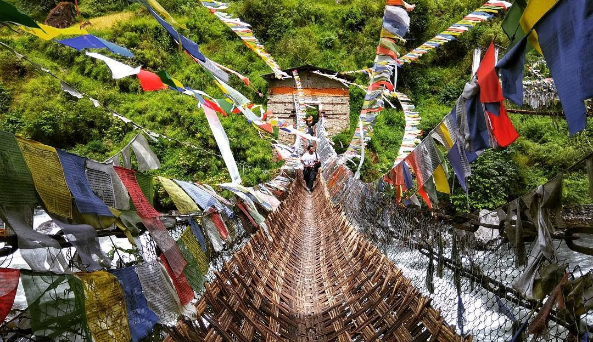
Tawang, nestled in the scenic state of Arunachal Pradesh, stands as the crown jewel of the region and the vibrant heart of Tawang district. Perched along the NH-13 section of the Trans-Arunachal Highway, this captivating town once served as the administrative center of the historic Tawang Tract, which has since split into Tawang and West Kameng districts. Today, Tawang proudly continues its legacy as the district headquarters, drawing visitors from around the globe with its rich cultural heritage, stunning landscapes, and spiritual charm. A top tourist destination in Arunachal Pradesh, Tawang promises an unforgettable journey into the mystical beauty of the Eastern Himalayas.
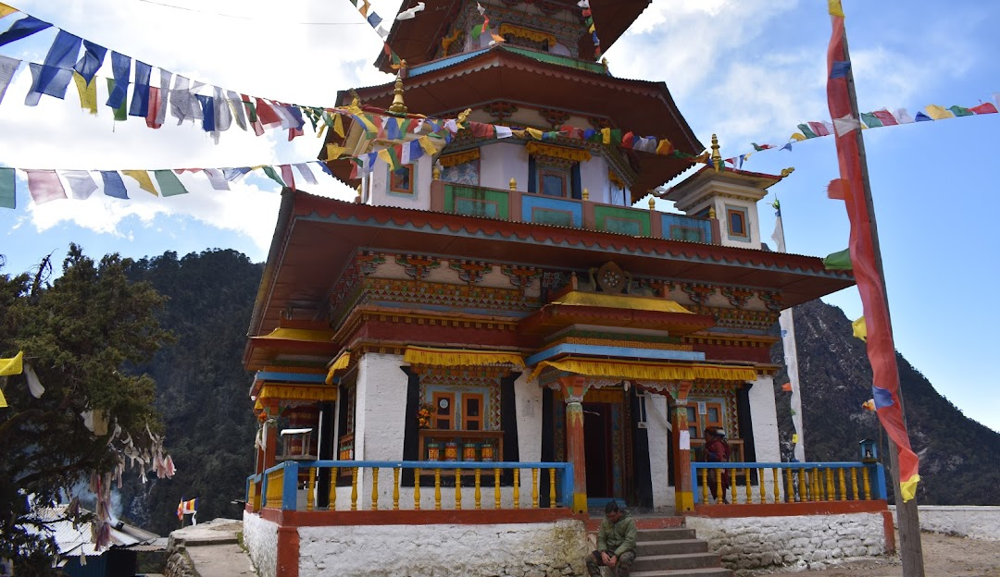
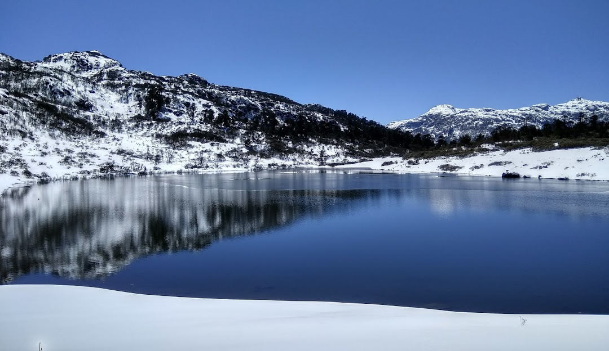
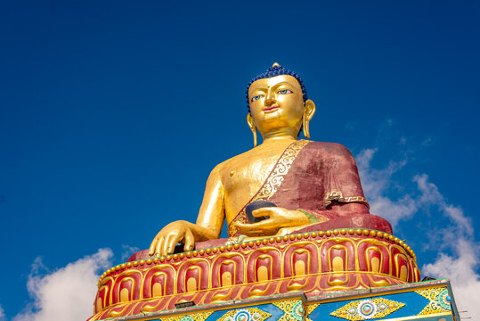
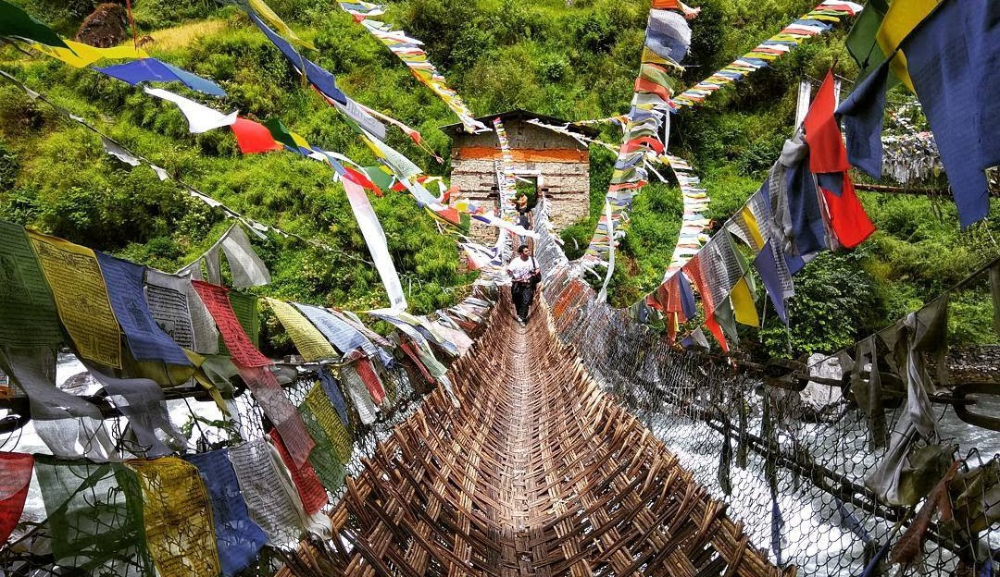
WEATHER.
Tawang experiences a cold climate, with winter bringing notably less rainfall compared to the summer months. The town's average temperature hovers around a chilly 5.5°C, and it receives an impressive annual rainfall of approximately 3,080 millimeters (121 inches), making it a place of both serene beauty and dynamic weather patterns.
FOOD & CULTURE.
The culture of Tawang is deeply rooted in Tibetan traditions and the Buddhist way of life, giving the town a serene and spiritual atmosphere. Dotted with numerous monasteries, or Gompas, Tawang exudes a calming ambiance that invites reflection and peace. The locals celebrate three major festivals—Torgya, Lossar, and the Choekhor harvest—each showcasing the rich cultural heritage of the region.
The Monpas are a highly creative community, renowned for their skills in wood carving, Thangka painting, carpet making, and weaving. Their artistic craftsmanship shines through in every piece they create. The Buddhist Lamas, too, are known for their expertise in crafting beautiful wooden bowls and intricate bamboo-woven products, showcasing their deep connection to tradition and artistry.
When it comes to food, Tawang's cuisine is simple yet flavorful. The staple dish is Zan, a flatbread typically served with either meat or vegetables. Other popular dishes include Gyapa Khazi, a fragrant rice dish, along with beloved Tibetan staples like momos and thukpa.
POINT OF INTERESTS.
1. SELA PASS.
Sela Pass is a breathtaking high-altitude mountain pass located in Tawang, Arunachal Pradesh, standing at an elevation of approximately 13,700 feet (4,200 meters) above sea level. This stunning route, surrounded by snow-covered peaks, glacial lakes, and picturesque valleys, serves as the main gateway connecting Tawang to the rest of India.
2. JASWANT GARH.
Jaswant Garh, located near Tawang, is a site of deep historical significance, dedicated to Rifleman Jaswant Singh Rawat of the Indian Army. He valiantly defended against Chinese forces during the 1962 Sino-Indian War. This memorial stands as a tribute to his extraordinary bravery and sacrifice.
3. JANG WATERFALL.
Jang Waterfall, also known as Bong Bong Falls, cascades dramatically from a height of 100 meters. Originating from the northern slopes of Sela Pass, the Nuranang River forms this stunning waterfall, which then flows into the Tawang River. Located just 2 kilometers from Jang, along the Tawang-Bomdila road, this waterfall is not only a spectacular natural wonder but also serves as a source of electricity for the local area through a small hydel plant nearby. The waterfall is also steeped in local legend, named after a Monpa girl, Nura, who aided Rifleman Jaswant Singh Rawat during the 1962 Sino-Indian War.
4. TAWANG BUDDHIST MONESTRY.
Tawang Monastery, also known as Gaden Namgyal Lhatse, is a spiritual and cultural gem perched on a hilltop at around 10,000 feet above sea level. Founded by Merak Lama Lodre Gyamtso in 1860-61 AD, this monastery offers panoramic views of the Tawang-Chu Valley and stands as a fortress-like structure radiating a regal aura. Recognized as the largest monastery in India and the second-largest in the world after Borobudur in Indonesia, Tawang Monastery is a must-visit destination for those seeking peace, spirituality, and breathtaking scenery.
5. TAWANG WAR MEMORIAL.
The Tawang War Memorial stands as a poignant reminder of the bravery and sacrifices of Indian soldiers who fought during the 1962 Sino-Indian War. This historic site pays homage to the heroes who laid down their lives defending the nation.
6. CHAKZAM BRIDGE.
Built in the 15th century, Chakzam Bridge is a remarkable iron bridge that spans the Tawang Chu River. One of the last surviving Tibetan bridges in the area, it offers a glimpse into ancient engineering marvels and serves as a connection to the region's rich history.
7. PANKANG TENG TSO LAKE.
Pankang Teng Tso Lake, also known as P.T. Tso or Madhuri Lake, is a mesmerizing high-altitude lake located at 4,640 meters (15,223 feet) above sea level in the Tawang district. Surrounded by snow-capped mountains and verdant forests, this lake is a tranquil haven of natural beauty.
8. BUMLA PASS.
Bumla Pass, located about 37 km from Tawang, is a high-altitude mountain pass at 15,200 feet above sea level. Known for its rugged beauty and historical significance, Bumla Pass was one of the battle sites during the 1962 Indo-China war. Positioned close to the Indo-China Line of Actual Control, visitors require a special permit from the Tawang Deputy Commissioner's Office and the Indian Army to visit this stunning yet remote area. The journey to Bumla is challenging, with sharp turns and rough terrain, but the reward is unparalleled views of the Eastern Himalayas and the serene Sangetsar Lake, also known as Madhuri Lake.
CURRENCY.
Here, transactions unfolds in Indian Rupees(INR), where each coin and note tells a tale of India's vibrant economy